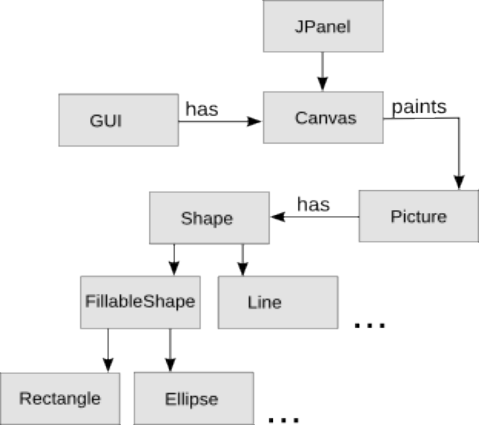

Tekninen suunnitelma
Piirustusohjelma Draw
Alex Lagerstedt | 69482W | EST 3.vsk | 22.2.2010
Ohjelman rakennesuunnitelma
Ohjelman perusta tulee oleman piirrettyä kuvaa kuvaavaa Picture-luokka. Se sisältää erilaisia muotoja jotka periytyvät yhteisestä Shape-luokasta (tai toteuttavat Shape-rajapinnan). Kuvasta luodaan draw()-metodilla Graphics-olio jonka GUI:n sisältämä Canvas pystyy piirtämään.

Käyttötapauskuvaus
Tyypillisessä ohjelman käyttötapauksessa käyttäjä avaa aikasemmin tallenetun kuvan, tekee siihen pieniä muutoksia ja tallentaa kuvan uudestaan. Avaamisvaiheessa käyttäjä avaa valikosta tiedostonvalintadialogin. Käyttäjä valitsee haluamansa tiedoston ja ohjelma kutsuu kuvanlatausmetodia tiedostolle. Kuvanlatausmetodi käy SVG-tiedostoa läpi rivi riviltä ja tunnistaa siihen tallenetut piirto-objektit. Se luo uuden kuvaluokan ja lisää siihen tiedostosta löytyneessä järjestyksessä uudet Shape-oliot. Käyttöliittymä pyytää kuvaa piirtämään itsensä sille osoitettuun tilaan ja ohjelma jää odottamaan syötettä. Käyttäjä voi lisätä kuvaan uusia muotoja jolloin ne laitetaan kuvaluokkaan aina päälimmäiseksi olioksi. Käyttäjä voi myös valita aikaisemmin piirrettyjä Shape-olioita ja muuttaa vaikkapa niiden väriä jolloin kutsutaan kyseisen olion värinmuutosmetodia. Lopuksi käyttäjä tallentaa tiedoston joko entisen päälle tai uuteen tiedostoon valikon kautta. Kirjoitusmetodi käy kuvan oliot läpi alimmasta alkaen ja lisää vastaavan merkinnän tiedostoon.
Algoritmit
Draw käyttää hyvin yksinkertaista listarakennetta piirroksen kuvaamiseen joten monimutkaisempia itse toteutettavia algoritmeja ei toteuteta. Kaikki tarvittavat algoritmit löytyvät käytettyjen tietorakenteiden toteutuksen sisältä.
Tässä kohdassa on siis tarkoitus selostaa ne periaatteet, joilla ongelmat voidaan ratkaista, ei sitä, miten algoritmit koodataan. Siis ei luokkien tai metodien kuvauksia tai muitakaan Javaan tai ohjelmakoodiin liittyviä seikkoja tänne! (Vielä rautalangasta: älkää mainitko tässä mitään siitä, millaisilla metodeilla algoritmi saadaan toimimaan, millaisia silmukkarakenteita tarvitsee kirjoittaa, tms. Nämä ovat toteutusteknisiä yksityiskohtia, jotka eivät ole tämän osion, eivätkä oikeastaan koko projektisuunnitelman kannalta kiinnostavia.) Jos ohjelmassa on tarkoitus käyttää joitakin yleisesti tunnettuja algoritmeja kannattaa toki mainita algoritmit nimeltä.Tietorakenteet
Kuva toteutetaan sisäisesti Shape-luokan olioita sisältävänä ArrayListinä. Dynaamista koon muutosta tarvitaan koska kuvan sisältämää muotojen määrää ei voida tietää ennalta eikä myöskään haluta rajata. Muita vaihtoehtoja ovat javan Vector-luokka ja mahdollisesti LinkedList.
Aikataulu
Toteutusjärjestys:
- Yksinkertainen testikäyttöliittymä joka piirtää näytölle jotain - toteutettu
- Shape abstraktina luokkana tai rajapintana ja yksi sen perivä tai toteuttava muoto ~3h
- Picture-luokka ja sen piirtäminen käyttöliittymään ~3h
- Työkalu jolla voi lisätä hiirellä Shape-olioita kuvaan ~3h
- Undo ja redo-mahdollisuus kaikille kuvaan vaikuttaville toiminnoille ~3h
- Tallenus ja lataus tiedostosta ~5h
- Muita muotoja ja lisäominaisuuksia, värit ~5h
- Useamman olion valitseminen ja muokkaus ~5h
- Testausta ja hienosäätöä ~8h
Yksikkötestaussuunnitelma
Käyttöliittymä on hyvin keskeinen osa ohjelmaa ja sen yksikkötestaus on hankalaa. Myös hiirisyötteiden ja piirrettävien kuvien oikeellisuutta on käytännössä mahdotonta testata ohjelmallisesti. Yksikkötestaus tulee keskittymään Shape-luokkaan ja siitä periytyvien luokkien toteutukseen, Picture-luokan metodeihin sekä tiedostojen lukemiseen ja kirjoittamiseen. Shape-luokan yksikkötestit pyritään toteuttamaan mahdollisimman aikaisessa vaiheessa jotta uusien muotojen toteuttaminen ei tuota ihmeellisiä lisävirheitä kuvaa käsiteltäessä.
Kirjallisuusviitteet ja linkit
Internet tulee olemaan ehdottomasti tärkein tiedonlähde ohjelman toteutuksessa. Käytettyjen linkkien lista kasvanee melko samaan tahtiin itse projektin kanssa.
- Käyttöliittymä ja piirtäminen
- Java SE 6 API
- http://java.sun.com/docs/books/tutorial/2d/
- Tiedostojen lataaminen ja kirjoittaminen
- http://java.sun.com/webservices/reference/tutorials/jaxp/html/sax.html
- Vektorigrafiikkaa
- http://en.wikipedia.org/wiki/Vector_graphics
- http://en.wikipedia.org/wiki/Scalable_Vector_Graphics
- http://www.w3.org/TR/SVG11/
- http://www.w3.org/TR/SVGTiny12/